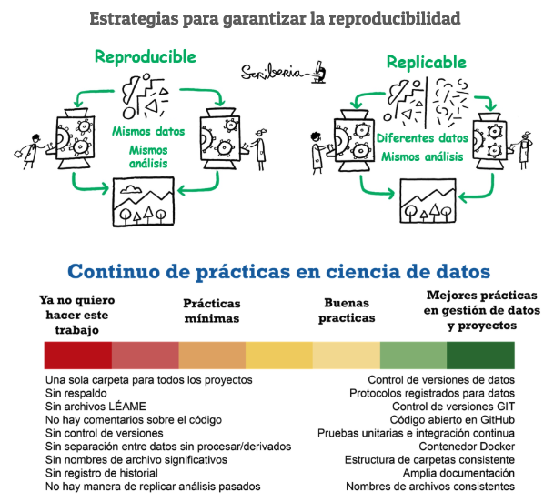
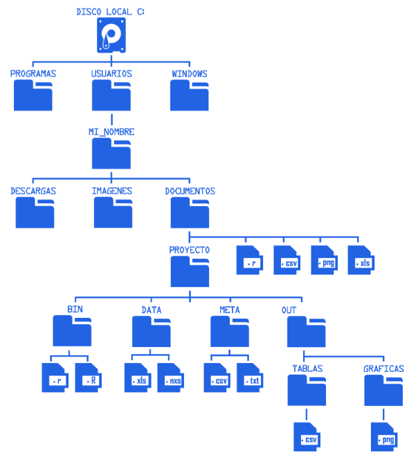

Unidad 2. Documentación de Proyectos y Reproducibilidad en Bioinformática
Introducción
La bioinformática es una disciplina altamente dependiente de procesos computacionales, scripts, versiones de software y decisiones técnicas que no siempre quedan reflejadas en los resultados finales o en los artículos científicos. A diferencia de otros enfoques experimentales, en los análisis bioinformáticos la reproducibilidad depende casi por completo de la organización, documentación y trazabilidad del proyecto.
En esta unidad se abordan los principios fundamentales de la documentación de proyectos bioinformáticos y las estrategias para garantizar la reproducibilidad, estableciendo las bases conceptuales y prácticas necesarias para el uso de Bash como herramienta central en flujos de trabajo reproducibles.

Importancia de la documentación en proyectos bioinformáticos
La documentación es un componente esencial del trabajo científico. En biología experimental, los investigadores mantienen cuadernos de laboratorio detallados que permiten reconstruir los procedimientos, condiciones y decisiones tomadas durante un experimento. En bioinformática, la documentación cumple exactamente la misma función, pero aplicada a procesos computacionales.
Una documentación adecuada permite:
Entender qué se hizo, cómo se hizo y por qué se hizo.
Facilitar la revisión crítica del análisis.
Permitir que otros investigadores reproduzcan o extiendan el trabajo.
Evitar la pérdida de información a lo largo del tiempo.
En el contexto de este curso, la documentación no se considera un elemento adicional o decorativo, sino una parte integral del análisis bioinformático, tan importante como el propio código o los datos.
Organización de proyectos bioinformáticos
La organización de archivos y directorios es el primer paso hacia la reproducibilidad. Un proyecto bioinformático debe contar con una estructura clara que separe los distintos componentes del análisis.
Una organización adecuada:
Facilita la navegación del proyecto.
Reduce errores al ejecutar comandos o scripts.
Permite automatizar análisis mediante Bash.
Mejora la colaboración entre investigadores.
En esta unidad se promueve la separación explícita entre:
Datos crudos y datos procesados.
Scripts y resultados.
Metadatos y documentación.
Rutas absolutas y rutas relativas
En bioinformática, la correcta referencia a archivos y directorios es esencial para la ejecución de comandos y scripts en Bash. Para ello, es importante distinguir entre rutas absolutas y rutas relativas.

Ruta absoluta
Una ruta absoluta especifica la ubicación completa de un archivo o directorio desde la raíz del sistema de archivos.
Usando la estructura mostrada en la figura, un ejemplo de ruta absoluta sería:
C:/Usuarios/MI_NOMBRE/Documentos/PROYECTO/DATA/muestras.xlsxEste tipo de ruta:
No depende del directorio desde el cual se ejecute el comando.
Es clara y explícita.
Puede perder portabilidad si el proyecto se mueve a otro sistema o usuario.
Ruta relativa
Una ruta relativa describe la ubicación de un archivo en relación con el directorio de trabajo actual.
Por ejemplo, si el usuario se encuentra dentro del directorio:
C:/Usuarios/MI_NOMBRE/Documentos/PROYECTO/El mismo archivo puede referenciarse como:
DATA/muestras.xlsxO, si el comando se ejecuta desde BIN/:
../DATA/muestras.xlsxEste tipo de ruta:
Favorece la portabilidad del proyecto.
Permite ejecutar scripts en diferentes sistemas sin modificar el código.
Es fundamental para flujos de trabajo reproducibles en Bash.
Nomenclatura de archivos y compatibilidad con Bash
El nombrado de archivos es un aspecto frecuentemente subestimado, pero tiene un impacto directo en la eficiencia y reproducibilidad de los análisis.
Una nomenclatura adecuada debe cumplir:
Consistencia: Usar un esquema de nombres consistente en todo el proyecto.
Descriptividad: Incluir información clave como el tipo de datos, fecha, versión, etc.
Evitar Espacios: Usar guiones bajos (_) o guiones (-) en lugar de espacios.
Fecha en Formato ISO: Usar el formato de fecha AAAA-MM-DD para asegurar un orden cronológico lógico.
Prefijos y Sufijos: Usar prefijos y sufijos estandarizados para identificar el estado o versión del archivo.
Evitar Acentos y Caracteres Especiales: No utilizar acentos, eñes ni caracteres especiales que puedan causar problemas de compatibilidad en diferentes sistemas operativos o herramientas de software.
Ejemplos:
2024-08-01_sample1_raw_data.fastq
2024-08-11_sample1_trimmed_data.fastq
2024-08-20_sample1_aligned.bam
Estos criterios son especialmente importantes al trabajar con Bash, ya que muchos comandos (ls, grep, sed, awk, bucles y scripts) dependen de patrones de nombres para automatizar procesos.
Una buena nomenclatura permite que los archivos “hablen por sí mismos” y reduce la necesidad de explicaciones adicionales.
Ambientes computacionales y reproducibilidad
La reproducibilidad no depende únicamente del código, sino también del entorno computacional en el que se ejecuta. Diferentes versiones de programas o dependencias pueden producir resultados distintos.
Para abordar este problema, se introducen estrategias como:
Uso de ambientes aislados (por ejemplo, conda).
Uso de contenedores (Docker o Apptainer).
Documentación explícita de versiones de software.
Estas herramientas permiten encapsular los análisis y asegurar que puedan ejecutarse de manera consistente en diferentes sistemas, complementando el uso de Bash como lenguaje de automatización.
Control de versiones y trazabilidad
¿Qué es Git?
Git es un sistema de control de versiones diseñado para registrar y administrar los cambios realizados en un conjunto de archivos a lo largo del tiempo. Su objetivo principal es mantener un historial del desarrollo de un proyecto, permitiendo identificar qué cambios se realizaron, cuándo ocurrieron y, en caso necesario, regresar a versiones anteriores.
Git trabaja de forma local, es decir, el historial del proyecto se guarda en la computadora del usuario, sin necesidad de conexión a internet. Esto lo convierte en una herramienta robusta para el manejo de proyectos computacionales en cualquier entorno.
¿Qué es GitHub?
GitHub es una plataforma en línea que permite alojar y compartir proyectos que utilizan Git. Funciona como un repositorio remoto que almacena una copia del proyecto y su historial de cambios, facilitando el acceso, la consulta y el respaldo del trabajo.
GitHub no reemplaza a Git:
Git gestiona los cambios.
GitHub permite almacenar y visualizar esos cambios en línea.

Conceptos básicos de Git
A lo largo del curso se utilizarán algunos conceptos fundamentales de Git. No se busca dominar la herramienta en profundidad, sino comprender su lógica y su papel dentro de un flujo de trabajo reproducible.
Repositorio
Es el espacio donde se almacena un proyecto gestionado con Git. Contiene los archivos del proyecto y el historial de cambios.init
Acción que convierte una carpeta común en un repositorio Git, permitiendo comenzar a registrar cambios.commit
Es un registro de cambios en el proyecto. Cada commit representa un punto en el tiempo que documenta el estado de los archivos y las modificaciones realizadas.push
Es la acción de enviar los cambios registrados localmente al repositorio remoto (por ejemplo, en GitHub), asegurando que el proyecto quede respaldado y accesible en línea.
Git y reproducibilidad
El uso de Git y GitHub contribuye directamente a la reproducibilidad al permitir:
Mantener un historial claro del desarrollo del proyecto.
Identificar versiones específicas del análisis.
Documentar la evolución de scripts y documentación.
Evitar la pérdida de información durante el trabajo computacional.
Práctica – Introducción a Git y GitHub
Actividad
Crear una cuenta personal en GitHub (si aún no se cuenta con una).
Crear un repositorio llamado exactamente:
tareas_intro_bash_bioinfoNo es necesario agregar contenido adicional dentro de
unidad_2en esta práctica.
Documentación técnica con Markdown
Markdown es un lenguaje de marcado ligero diseñado para facilitar la escritura de texto estructurado y legible en formato plano. En bioinformática, Markdown es ampliamente utilizado para documentar proyectos debido a su simplicidad y compatibilidad con múltiples plataformas.
El uso de Markdown permite:
Crear archivos
README.mdclaros y estructurados.Documentar scripts y flujos de trabajo.
Generar reportes técnicos reproducibles.
Integrar documentación con repositorios de código.
En este curso, Markdown se utilizará como herramienta principal para documentar proyectos bioinformáticos, promoviendo una documentación clara, concisa y fácilmente actualizable.
Práctica – Documentación con Markdown
Actividad
- Utilizar el repositorio creado en la práctica de Git y GitHub:
tareas_intro_bash_bioinfo- En la raíz del repositorio, crear o editar el archivo:
README.mdContenido del README.md
El archivo README.md deberá incluir brevemente:
Nombre del estudiante
Nombre del curso
Descripción general del repositorio
(¿Para qué se utilizará este repositorio a lo largo del curso?)
Elementos de Markdown a utilizar
Para esta práctica, el archivo README.md deberá utilizar algunos elementos básicos de la sintaxis Markdown:
Encabezados
Utilizar # para el título principal y ## para secciones secundarias, con el fin de estructurar el documento de manera clara y jerárquica.
Ejemplos:
# Heading 1
## Heading 2
### Heading 3Heading 1
Heading 2
Heading 3
Listas con viñetas
Utilizar - para enumerar información como objetivos, descripciones o contenidos del repositorio.
Ejemplos:
- Unidad 1
- Unidad 2
- Unidad 3Unidad 1
Unidad 2
Unidad 3
Texto en negritas
Utilizar **texto** para resaltar conceptos importantes o secciones clave dentro del documento.
Ejemplos:
**Alumno**Alumno
Texto en cursivas
Utilizar *texto* para enfatizar palabras o frases específicas.
*Zea mays*Zea mays
Código en línea
Utilizar acento invertido simple (`) para resaltar nombres de archivos, carpetas o términos técnicos dentro de una oración.
Ejemplos:
`README.md`, `unidad_2`, `tareas_intro_bash_bioinfo` README.md, unidad_2, tareas_intro_bash_bioinfo
Bloques de código
Utilizar triple acento invertido (``` ) para mostrar estructuras de carpetas, fragmentos de texto o ejemplos de formato, sin necesidad de incluir comandos.
Ejemplos:
```
AMAS.py convert \
-i ../data/t57.g179.Cercocarpus_final_phylonet/FPA_b.trimm7.phy \
-f phylip -d dna -u nexus
```AMAS.py convert \
-i ../../../../data/t57.g179.Cercocarpus_final_phylonet/FPA_b.trimm7.phy \
-f phylip -d dna -u nexusNota: Se recomienda un editor de texto que facilite la escritura en Markdown, como Visual Studio Code, ya que permite visualizar la estructura del documento de manera clara y ofrece una vista previa del formato Markdown.
Tarea – Unidad 2
Documentación de un proyecto bioinformático (Markdown)
Objetivo
Documentar un proyecto bioinformático —real o propuesto— mediante un archivo README.md, siguiendo buenas prácticas de organización y reproducibilidad.
Actividad
Crear o adaptar la carpeta raíz de un proyecto bioinformático.
Crear un archivo
README.mden la raíz del proyecto.El
README.mddebe incluir brevemente:Título del proyecto
Introducción
Objetivos
Estructura de carpetas
Programas y versiones
Estructura mínima sugerida
project_root/
├── README.md
├── data/
├── scripts/
├── results/
├── metadata/
└── docs/